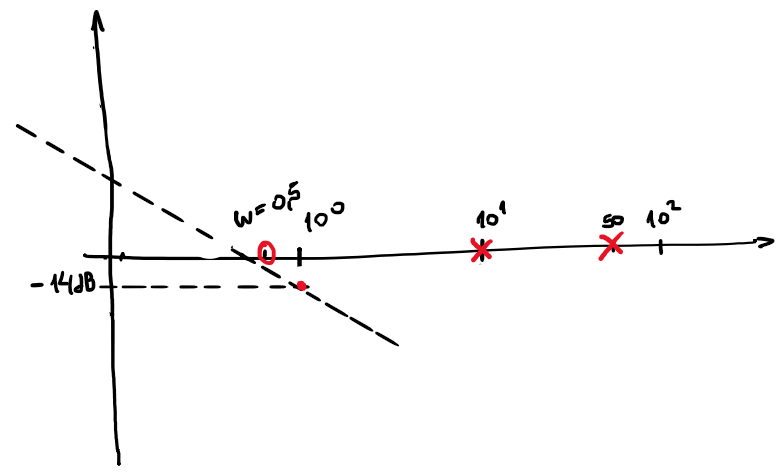
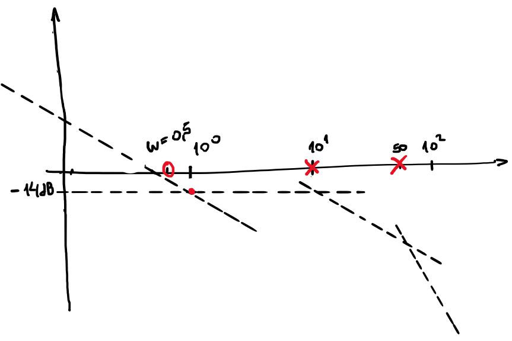
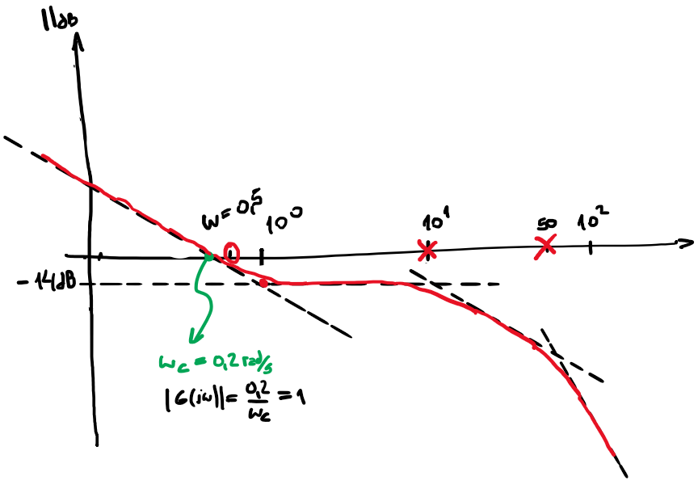
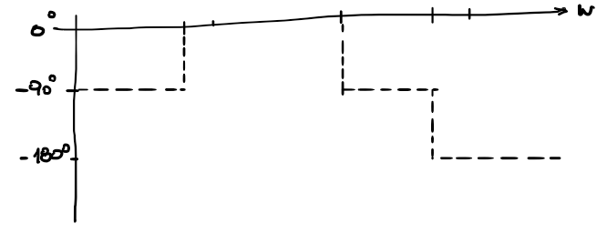

Respuesta Frecuencial de Sistemas lineales y SISO#
Analicemos el paso de del dominio de Laplace al frecuencial. Para esto consideraremos el sistema lineal e invariante en el tiempo descripto por la función de transferencia:
\[
H(s)= k \dfrac{\prod_{j=1}^{m}(s-z_j)}{\prod_{i=1}^{n}(s-p_i)}
\]
que por simplicidad consideraremos que \(p_i\) y \(z_j\) son reales simples.
Nos interesa determinar la respuesta del sistema a una entrada de la forma (sinusoidal)
La salida es una senoide de la misma frecuencia que la senoide de la entrada, amplificada o atenuada por \(|H(j\omega)|\) y desfasada por el ángulo \(\angle{H(j\omega)}\)
se lo llama TransferenciaArmónica o respuesta en Frecuencia del sistema. Su conocimiento para todo \(\omega\) permite determinar la respuesta en régimen permanente a entradas sinusoidales
Los resultados se pueden extender al caso de tener polos complejos conjugados y con multiplicidad. Siempre con la condición que sean estables, es decir \(\mathbb{Re}(p_i)<0\)
Sin perder generalidad podremos considerar que \(p_i\) y \(z_j\) son reales por lo que:
\[
G(s)= k \dfrac{\prod_{j=1}^{m}(\tau_{z_j}s+1)}{\prod_{i=1}^{n}(\tau_{p_i}s+1)}
\]
expresado como la función transferencia armónica:
\[
H(\omega)= k \dfrac{\prod_{j=1}^{m}(j\tau_{z_j}\omega+1)}{\prod_{i=1}^{n}(j\tau_{p_i}\omega+1)}= k \dfrac{\prod_{j=1}^{m}r_{z_j}e^{j\theta_{z_j}}}{\prod_{i=1}^{n}r_{p_i}e^{j\theta_{p_i}}}
\]
Finalmente, por propiedades de los logaritmos, el módulo en dB se determina sumando los módulos individuales de los polos y ceros para cada frecuencia.
El resultado anterior nos permite graficar un diagrama de Bode a partir de diagramas de Bode de sistemas mas simples. Analizaremos cada una de estas opciones tanto para polos como para ceros.
\[\begin{split}
|G(j\omega)| = \dfrac{1}{\omega} \Longrightarrow \underbrace{|G(j\omega)|_{dB} = - 20 \log{\omega}}_{\substack{\text{Ecuación de una recta}\\ \text{con pendiente de -20dB/dec}\\ \text{(con } \omega \text{ en forma logarítmico)}}}
\end{split}\]
para frecuencia \(\omega = 1 \dfrac{rad}{seg}\) tenemos que el módulo es:
\[
|G(j\omega)|_{\omega = 1 \dfrac{rad}{seg}} = 0 dB
\]
cuando \(\omega \longrightarrow 0\) el módulo se puede aproximar a la asíntota:
\[
|G(j\omega)|_{dB} \approx 0 dB
\]
para \(\omega \longrightarrow \infty\) el módulo puede aproximarse a la asíntota:
\[\begin{split}
|G(j\omega)|_{dB} \approx -10 \log(\omega^2\tau^2) = \underbrace{-20\log(\omega)-20\log(\tau)}_{\substack
{\text{Ecuación de una recta}\\
\text{en 0 dB para } \omega=\dfrac{1}{\tau}
}}
\end{split}\]
Notar que para \(\omega=\dfrac{1}{\tau}\) el módulo es:
donde \(\xi\) es el coeficiente de amortiguamiento, \(\omega_n\) es la frecuencia natural y los polos se ubican en \(\underbrace{p_{1,2}=-\xi\omega_n\pm \omega_n\sqrt{\xi^2-1}}_{\text{complejos conjugados}}\) para \(0<\xi<1\) y \(|p_{1,2}|=\omega_n\)
cuando \(\omega \longrightarrow 0\) el módulo se puede aproximar a la asíntota:
\[
|G(j\omega)|_{dB} \approx 0 dB
\]
para \(\omega \longrightarrow \infty\) el módulo puede aproximarse a la asíntota:
\[\begin{split}
|G(j\omega)|_{dB} \approx 10\log(\omega^2\tau^2) = \underbrace{20\log(\omega)+20\log(\tau)}_{\substack
{\text{Ecuación de una recta}\\
\text{con pendiente 20dB/dec}\\
\text{que corta el eje}\\
\text{en 0 dB para } \omega=\dfrac{1}{\tau}
}}
\end{split}\]
De forma similar a lo resuelto para los polos complejos conjugados, se puede llegar a que la respuesta en frecuencia de la siguiente función de transferencia con un para de ceros complejos conjugados normalizada en ganancia, es:
Magnitud: Determinar las singularidades en el origen \(\Longrightarrow k_0(j\omega)^n\) (resultado de los polos y/o ceros de multiplicidad n) Graficar la asintota en baja frecuencia (\(n~x~20dB/dec\)) y calcular la magnitud de \(k_0\) a \(\omega = 1\)
Completar la magnitud extender las asintotas para bajas frecuencias hasta el primer punto de quiebre \(\Longrightarrow\) cambiar la pendiente en función del orden del o los polos y/o ceros de primer orden o segundo orden.
Dibujar el módulo aproximado sabiendo que los polos/ceros en el punto de quiebre, modifican en -3dB/3dB respectivamente y para los polos/ceros de segundo orden \(\Longrightarrow |G(j\omega)|_{dB} \approx \dfrac{1}{2}\xi\)
Graficar asintotas en baja frecuencia como \(\phi = n~90º\)
Aproximar como guía con saltos de \(\pm 90º\) para primer orden y \(\pm 180º\) para segundo orden en los puntos de quiebre de magnitud
Aproximar con una asintota el salto según corresponda
Se puede aproximar por una curva suave en forma aproximada.
para \(\omega = 1 \Longrightarrow k_0=0.2 \Longrightarrow \approx -14dB\)

step) Dibujar las asíntotas
\[\begin{split}
\text{puntos de quiebres } \omega = \left\{
\begin{array}{l}
0.5 \text{ (un cero) la pendiente pasa a } 0dB/dec \simeq -8dB\\
10 \text{ (un polo) la pendiente pasa a } -20dB/dec \\
50 \text{ (un polo) la pendiente pasa a } -40dB/dec \\
\end{array}\right.
\end{split}\]

step) corrección del módulo en los puntos de quiebre
\[\begin{split}
\text{puntos de quiebres } ||_{dB} = \left\{
\begin{array}{l}
+3dB \text{ para } \omega = 0.5\\
-3dB \text{ para } \omega = 10\\
-3dB \text{ para } \omega = 50\\
\end{array}\right.
\end{split}\]

step) Fase a baja frecuencia el \(-90º\)
step) Graficar escalones en puntos de equilibrio

step) dibujar asíntotas, en verde la asintotas con una recta en +/- media decada.
{kind=link}
{kind=link}
{kind=link}
{kind=link}
{kind=link}
{kind=link}
{kind=link}
{kind=link}
{kind=link}
{kind=link}
{kind=link}
{kind=link}
{kind=link}
{kind=link}
{kind=link}
{kind=link}
{kind=link}
{kind=link}